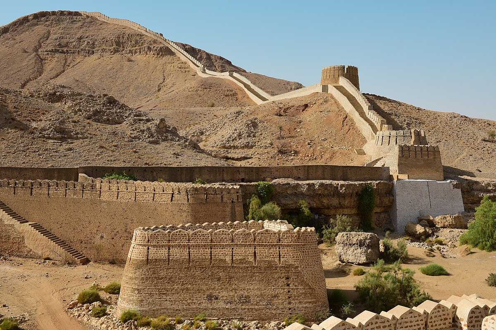

<div class="portfolio-single-load clearfix">
    <div class="custom-full-width-box">
        <div class="custom-container">
            <div class="custom-row align-items-center">
                <div class="custom-image-column">
                    
                </div>
                <div class="custom-text-column">
                    <h2 class="custom-heading">Jamshoro</h2>
                    <p class="custom-paragraph">
                        Jamshoro is essentially the gateway to the Indus Valley. It is world-famous and rich cultural heritage. Jamshoro is 18 km from Northwest to the city of Hyderabad and 150 km Northwest from Karachi city. Ranikot Fort, also known as "the Great Wall of Sindh" is an ancient fort near Sunn, Jamshoro District, in Sindh province. Jamshoro is home to three major universities, where students reside in hostels and enjoy meals in the evenings full of the serenity of nature there. Among the other attributes, it is worth mentioning that this city was built on a mountain called Morrha, which has inspired great poets to compose beautiful poetic verses on the romantic scenes it always gives to the visitors. Exclusively, the scene when the sun is about to set and hides behind the mountains is one of the enthralling moments one cannot forget. However, there is a sight at Jamshoro which is a picnic point for the lovers of nature. It is the Jamshoro Bridge built on River Indus which links Jamshoro with Hyderabad city. The shore of Indus at this point is quite hospitable and the visitors are greeted by a cool breeze waving in the River Indus.

                    </p>
                </div>
            </div>
        </div>
    </div><!-- .custom-full-width-box end -->

</div><!-- end single-project -->
